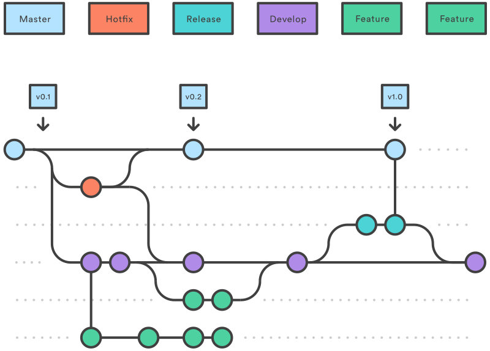

Developer Workflows
When working with Git most teams use one of two different workflows depending on their preference.
- Feature branch workflow (also known as GitHub flow)
- Gitflow
Though FBW is the simpler of the two, it should be used by teams that are confident whenever they change the main branch it still remains ready for production (main is always shippable).
Gitflow is useful for teams that like the space to combine multiple features, or are working on a large feature, before then shipping to production.
Feature branch workflow (GitHub flow)
 Source: GitHub Docs - Get started
Source: GitHub Docs - Get started
Using this workflow we only use two branches
-
main is the main branch developers work from. It represents the latest version of the code. The key principle is that main is always production ready. Anything merged in needs to have been peer reviewed, passed by CI, and ready for release.
-
A Feature branch is started each time we want to add to, update or fix something in the code. We branch off main when creating the feature, and once complete merge it back in
All branches
In all cases when the branch is created it should be pushed up to the origin repo and a pull request created as per the pull request process.
Gitflow
 Source: Atlassian Tutorials - Comparing Workflows
Using this workflow it means our branches have specific uses
-
main is the version of code that is in production (see the principle main is always shippable)
-
We create a Hotfix branch when we need to make a change to production code because of a critical error. When finished we merge the change back into main, but also Develop
-
Develop is the main branch the developers work from. It represents the current version of the code, including new features we’ve completed but not yet released. You should make this the default branch in GitHub
-
A Feature branch is started each time we want to add to, update or fix something in the code. We branch off Develop when creating the feature, and once complete merge it back into Develop
-
Once we have a set of features we want to put live, we create a Release branch. Last minute fixes and tidying up is done on this branch and then it is merged into main (put live) and back into Develop
Use of tools
There are a number of tools you can use to help you with gitflow, for example tools such as Sourcetree have support built in, and you can add support to git via extensions.
However these all assume that merging will be done locally and then pushed to the origin repo. Because we create pull requests on all the branches we create, and merge them using the GitHub web UI it means we cannot use these tools for merging.
So feel free to use them for creating your branches, however you may find it easier to simply manually create your branches and just ensure you stick to gitflow's naming convention.